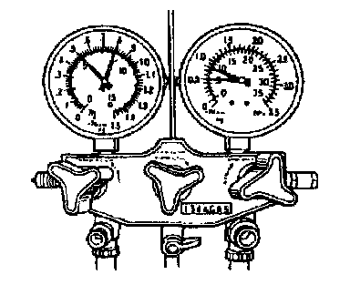

Refrigerant Charge Check
REFRIGERANT CHARGE CHECK1. Install the manifold gauge set.
2. Check the refrigerant pressure reading with the engine stopped.
3. Verify that the high- and low-pressure side readings of the manifold gauge are at 493 - 788 kPa (5.02 - 8.04 kg/sq.cm, 72 - 114 psi). If the pressure readings are lower than specified, recharge the refrigerant amount. If the pressure readings are within the specification but there is insufficient cooling, go to the next step. If the pressure readings are within the specification and there are no leaks, the refrigerant amount is OK.
4. Start the engine and run it at a constant 2000 rpm.
5. Turn the A/C switch on and set the fan switch at 4th.
6. Set the REC/FRESH lever to REC.
7. If the A/C compressor is short-cycling, note the low-pressure side reading at which the magnetic clutch kicks out.

8. If the pressure is 170 kPa (1.7 kg/sq.cm, 24 psi) or lower, evacuate then recharge the refrigerant system with the proper amount of refrigerant. If the pressure is 210 kPa (2.1 kg/sq.cm, 30 psi) or higher, inspect the thermo switch.